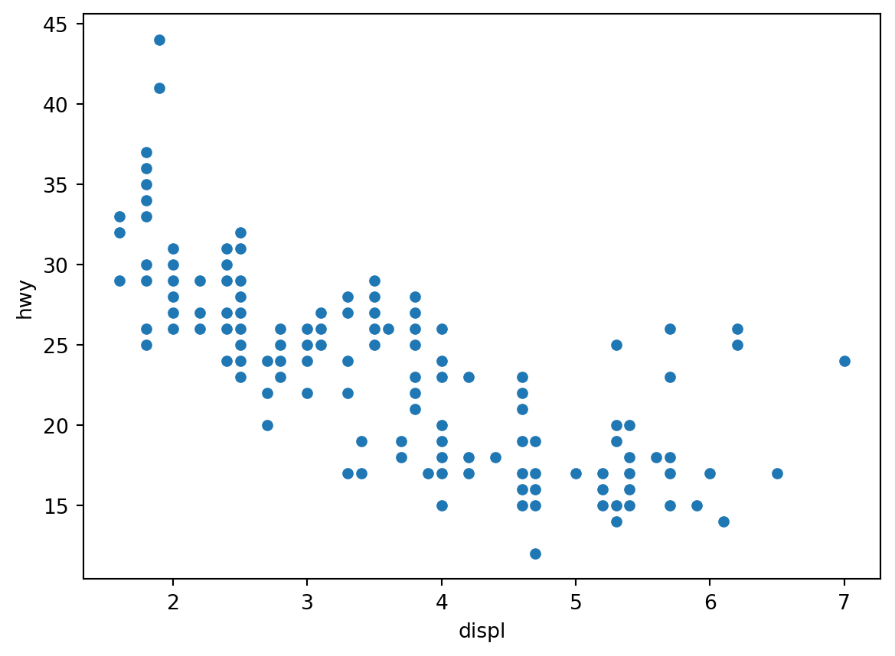
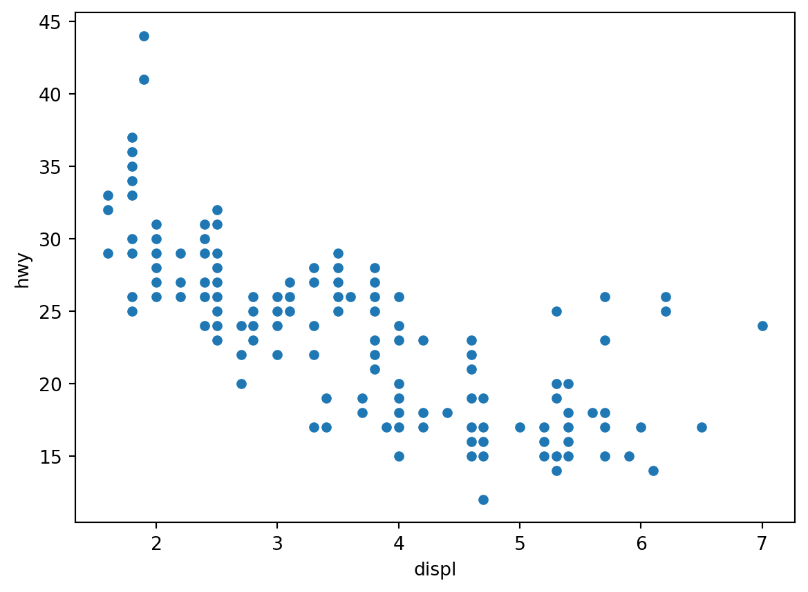
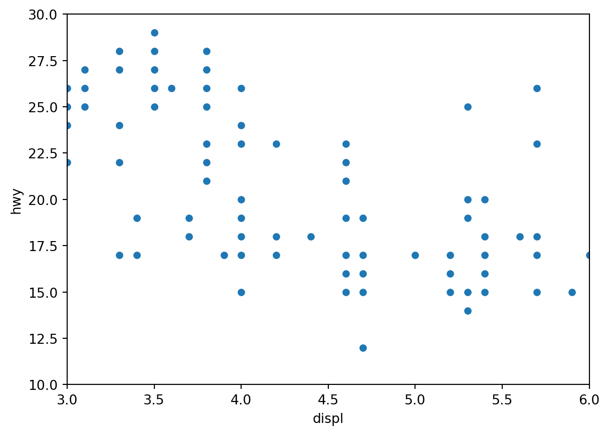
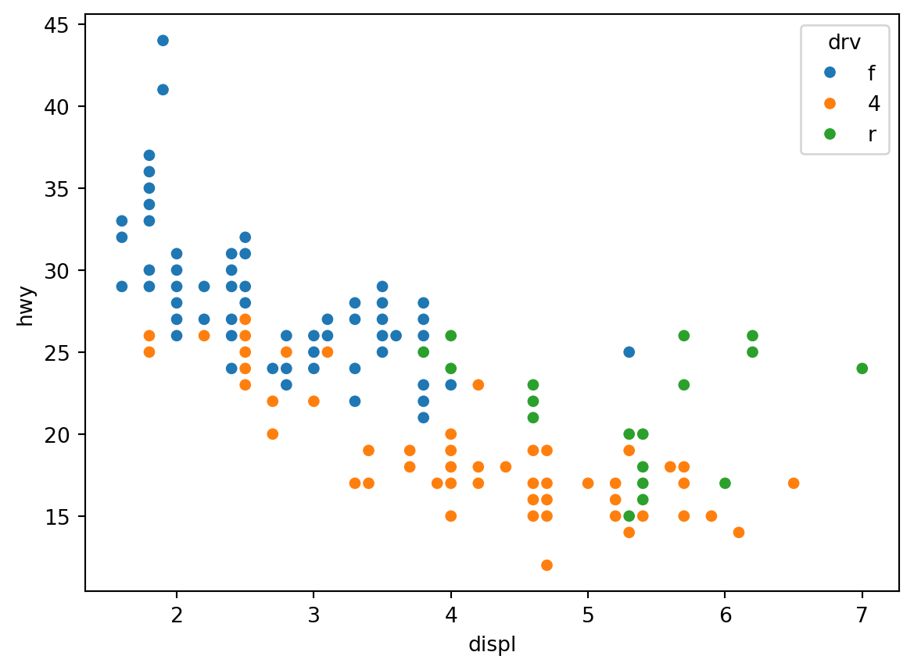
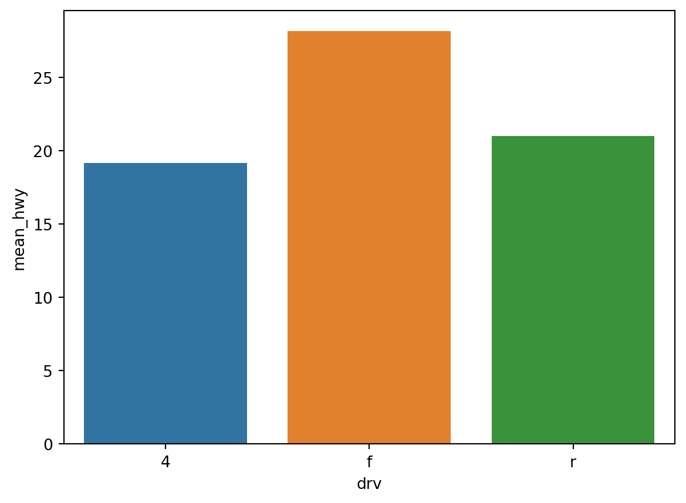
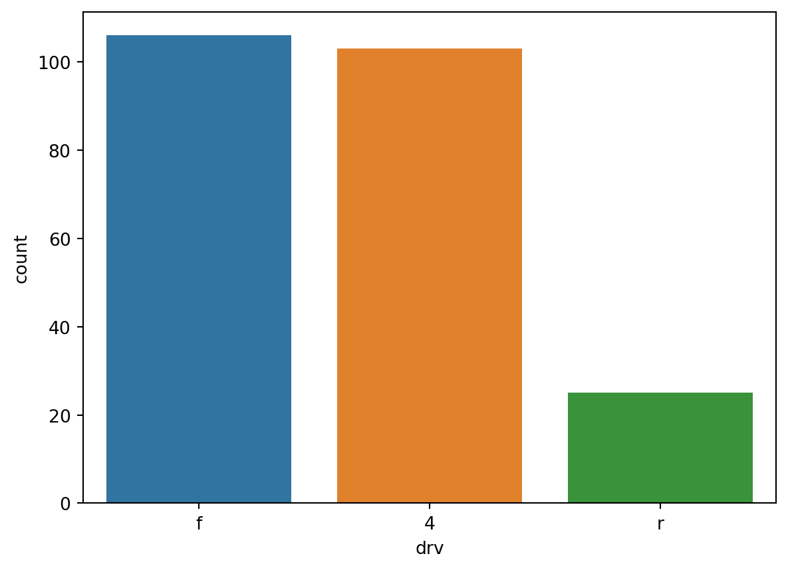

import pandas as pd
import seaborn as sns
import matplotlib.pyplot as plt
mpg = pd.read_csv('data/mpg.csv')
sns.scatterplot(data = mpg, x = 'displ', y = 'hwy')
plt.show()
plt.clf()
<Figure size 672x480 with 0 Axes>displ, y축은 hwy를 나타낸 산점도 만들기import pandas as pd
import seaborn as sns
import matplotlib.pyplot as plt
mpg = pd.read_csv('data/mpg.csv')
sns.scatterplot(data = mpg, x = 'displ', y = 'hwy')
plt.show()
plt.clf()
<Figure size 672x480 with 0 Axes>sns.scatterplot(data = mpg, x = 'displ', y = 'hwy') \
.set(xlim = [3, 6], ylim = [10, 30])
plt.show()
plt.clf()
<Figure size 672x480 with 0 Axes>drv별로 표식 색깔 다르게 표현sns.scatterplot(data = mpg, x = 'displ', y = 'hwy', hue = 'drv')
plt.show()
plt.clf()
<Figure size 672x480 with 0 Axes>df_mpg = mpg.groupby('drv', as_index = False) \
.agg(mean_hwy = ('hwy', 'mean'))
df_mpg
sns.barplot(data = df_mpg, x = 'drv', y = 'mean_hwy', hue = 'drv')
plt.show()
plt.clf()
<Figure size 672x480 with 0 Axes>df_mpg = df_mpg.sort_values('mean_hwy', ascending = False)
sns.barplot(data = df_mpg, x = 'drv', y = 'mean_hwy', hue = 'drv')
plt.show()
plt.clf()
<Figure size 672x480 with 0 Axes>df_mpg = mpg.groupby('drv', as_index = False) \
.agg(n = ('drv', 'count'))
sns.barplot(data = df_mpg, x = 'drv', y = 'n', hue = 'drv')
plt.show()
plt.clf()
<Figure size 672x480 with 0 Axes>.countplot()으로 빈도 막대 그래프 만들기
.barplot()과의 차이: countplot()은 별도로 빈도표를 만드는 작업이 필요하지 않다.sns.countplot(data = mpg, x = 'drv', hue = 'drv')
plt.show()
plt.clf()
<Figure size 672x480 with 0 Axes>import plotly.express as px
px.scatter(data_frame = mpg, x = 'cty', y = 'hwy', color = 'drv')** 자동차 종류별 빈도를 구하고, 막대 그래프 만들기
df = mpg.groupby('category', as_index = False) \
.agg(n = ('category', 'count'))
px.bar(data_frame = df, x = 'category', y = 'n', color = 'category')